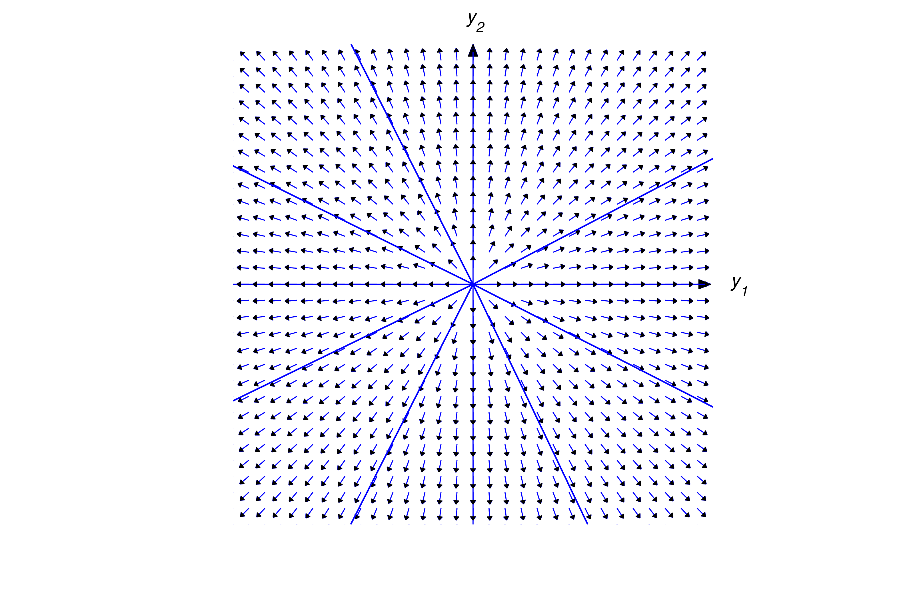
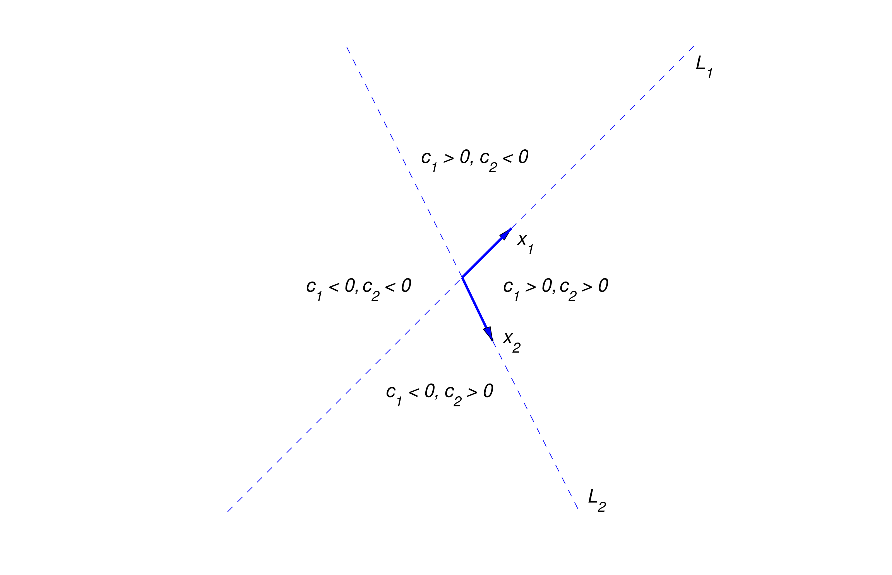
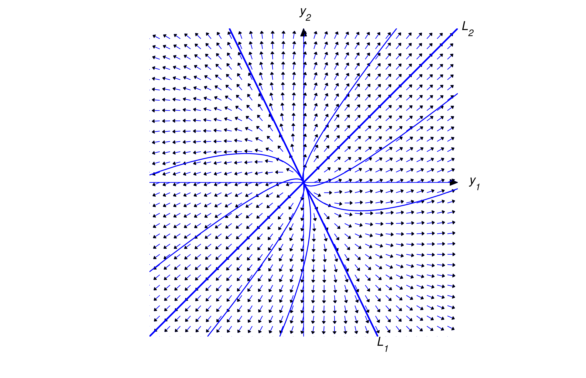
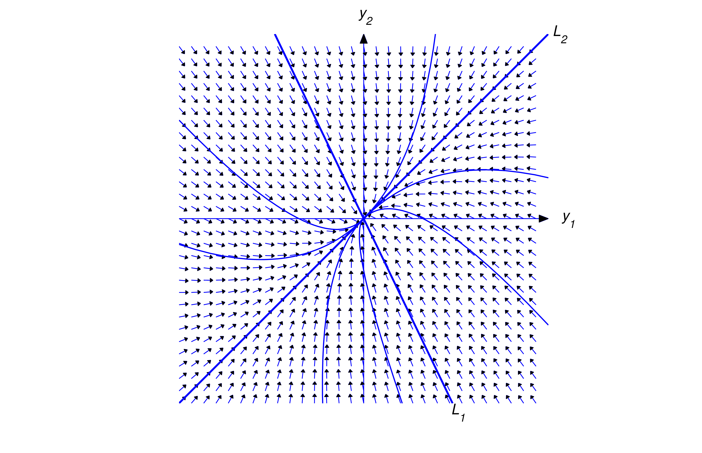
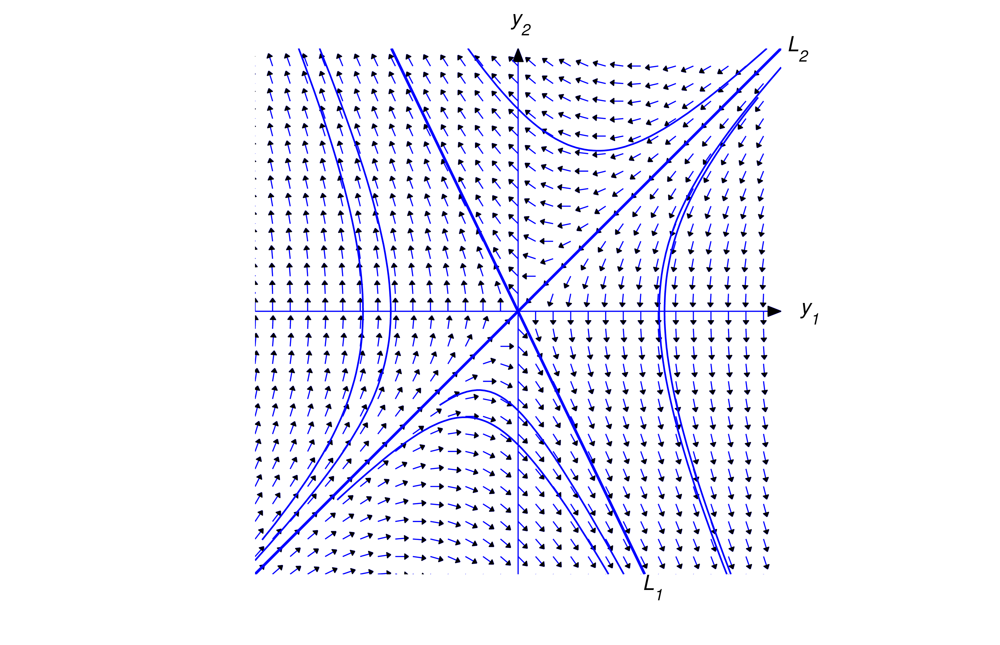

We’ll now begin our study of the homogeneous system \begin {equation} \label {eq:10.4.1} {\bf
y}'=A{\bf y}\end {equation} where \(A\) is an \(n\times n\) constant matrix. Since \(A\) is
continuous on \((-\infty ,\infty )\),
Theorem 10.2.1 implies that all solutions of (10.4.1) are defined on \((-\infty ,\infty )\). Therefore, when
we speak of solutions of \({\bf y}'=A{\bf y}\),
we’ll mean solutions on \((-\infty ,\infty )\).
In this section we assume that all the eigenvalues of \(A\) are real and that \(A\) has a set of
\(n\) linearly independent
eigenvectors. In the next two sections we consider the cases where some of the eigenvalues of \(A\) are complex, or
where \(A\) does not have \(n\) linearly independent eigenvectors.
In Example 10.3.2 we showed that the vector functions
\[ {\bf y}_1=\twocol {-e^{2t}}{2e^{2t}}\quad \mbox{ and } \quad {\bf y}_2=\twocol {-e^{-t}}{e^{-t}} \]
form a fundamental set of solutions of the system \begin {equation} \label {eq:10.4.2} {\bf y}'=\twobytwo {-4}{-3}65
{\bf y}\end {equation} but we did not show how we obtained \({\bf y}_1\) and \({\bf y}_2\) in the
first place.
To see how these solutions can be obtained we write (10.4.2) as
\begin {equation} \label {eq:10.4.3} \begin {array}{ccc} y_1'&=&-4y_1-3y_2\\y_2'&=&\phantom
{-}6y_1+5y_2\end {array} \end {equation} and look for solutions of the form \begin {equation}
\label {eq:10.4.4} y_1=x_1e^{\lambda t}\quad \mbox{ and } \quad y_2=x_2e^{\lambda t}\end {equation} where \(x_1\), \(x_2\), and \(\lambda \)
are constants to be determined. Differentiating (10.4.4) yields
\[ y_1'=\lambda x_1e^{\lambda t}\quad \mbox { and }\quad y_2'=\lambda x_2e^{\lambda t}\]
Substituting this and (10.4.4) into (10.4.3) and canceling the common factor \(e^{\lambda t}\) yields
\[ \begin {array}{ccc}-4x_1-3x_2&=&\lambda x_1 \\ 6 x_1+5x_2&=&\lambda x_2.\end {array} \]
For a given \(\lambda \), this is a homogeneous algebraic system, since it can be rewritten as \begin {equation}
\label {eq:10.4.5} \begin {array}{rcl} (-4-\lambda ) x_1-3 x_2&=&0\\ 6 x_1+(5-\lambda ) x_2&=&0.\end
{array} \end {equation} The trivial solution \(x_1=x_2=0\) of this
system isn’t useful, since it corresponds to the trivial solution \(y_1\equiv y_2\equiv 0\) of (10.4.3), which can’t be part of a
fundamental set of solutions of (10.4.2). Therefore we consider
only those values of \(\lambda \) for which (10.4.5) has
nontrivial solutions. These are the values of \(\lambda \) for which the determinant of (10.4.5) is zero; that is,
which implies that \(x_1=-x_2/2\), where \(x_2\) can be chosen arbitrarily. Choosing \(x_2=2\)
yields the solution \(y_1=-e^{2t}\), \(y_2=2e^{2t}\) of (10.4.3). We can write
this solution in vector form as \begin {equation} \label {eq:10.4.6} {\bf y}_1=\twocol {-1}{\phantom {-}2}
e^{2t}\end {equation}
Taking \(\lambda =-1\) in (10.4.5) yields the
system
so \(x_1=-x_2\). Taking \(x_2=1\) here yields the solution \(y_1=-e^{-t}\), \(y_2=e^{-t}\) of (10.4.3). We can write this solution in vector form as
\begin {equation} \label {eq:10.4.7} {\bf y}_2=\twocol {-1}{\phantom {-}1}e^{-t}\end {equation}
In (10.4.6) and (10.4.7) the constant coefficients in the arguments of the
exponential functions are the
eigenvalues of the coefficient matrix in (10.4.2), and the
vector coefficients of the exponential functions are
associated eigenvectors. This illustrates the next theorem.
Theorem 10.4.1 Suppose the
\(n\times n\) constant matrix \(A\) has \(n\) real eigenvalues \(\lambda _1,\lambda _2,\ldots ,\lambda _n\) (which need not be distinct) with
associated linearly independent eigenvectors \({\bf x}_1,{\bf x}_2,\ldots ,{\bf x}_n\). Then the functions
\[ {\bf y}_1={\bf x}_1e^{\lambda _1 t},\, {\bf y}_2={\bf x}_2e^{\lambda _2 t},\, \dots ,\, {\bf y}_n={\bf
x}_ne^{\lambda _n t} \]
form a fundamental set of solutions of \({\bf y}'=A{\bf y};\) that is, the general solution of this system is
\[ {\bf y}=c_1{\bf x}_1e^{\lambda _1 t}+c_2{\bf x}_2e^{\lambda _2 t} +\cdots +c_n{\bf x}_ne^{\lambda _n t}\]
Proof Differentiating \({\bf y}_i={\bf x}_ie^{\lambda _it}\) and
recalling that \(A{\bf x}_i=\lambda _i{\bf x}_i\) yields
\[ {\bf y}_i'=\lambda _i{\bf x}_ie^{\lambda _it}=A{\bf x}_ie^{\lambda _it} =A{\bf y}_i\]
This shows that \({\bf y}_i\) is a solution of \({\bf y}'=A{\bf y}\).
The Wronskian of \(\{{\bf y}_1,{\bf y}_2,\ldots ,{\bf y}_n\}\) is
\[ \left |\begin {array}{cccc} x_{11}e^{\lambda _1 t}& x_{12}e^{\lambda _2 t}&\cdots& x_{1n}e^{\lambda
_n t}\\ x_{21}e^{\lambda _1 t}& x_{22}e^{\lambda _2 t}&\cdots& x_{2n}e^{\lambda _n t}\\\vdots&
\vdots& \ddots& \vdots \\ x_{n1}e^{\lambda _1 t}& x_{n2}e^{\lambda _2 t}&\cdots&
x_{nn}e^{\lambda x_n t}\end {array}\right | =e^{\lambda _1 t}e^{\lambda _2 t}\cdots e^{\lambda _n t} \left |\begin
{array}{cccc} x_{11}&x_{12}&\cdots&x _{1n}\cr x_{21}&x_{22}&\cdots&x _{2n}\cr \vdots&
\vdots& \ddots& \vdots \cr x_{n1}&x_{n2}&\cdots&x _{nn}\cr \end {array}\right |\]
Since the columns of the determinant on the right are \({\bf x}_1\), \({\bf x}_2\), …, \({\bf x}_n\), which are
assumed to be linearly independent, the
determinant is nonzero. Therefore Theorem 10.3.3 implies that \(\{{\bf y}_1,{\bf
y}_2,\ldots ,{\bf y}_n\}\) is a fundamental set of solutions of
\({\bf y}'=A{\bf y}\).
Example 10.4.1
(a)
Find the general solution of \begin {equation} \label {eq:10.4.8} {\bf y}'=\twobytwo 2442
{\bf y}\end {equation}
(b)
Solve the initial value problem \begin {equation} \label {eq:10.4.9} {\bf y}'=\twobytwo 2442
{\bf y},\quad {\bf y}(0)=\left [\begin {array}{r}5 \\-1 \end {array}\right ]\end {equation}
SOLUTION(a)
The characteristic polynomial of the coefficient matrix \(A\) in (10.4.8) is
Hence, \(\lambda _1=6\) and \(\lambda _2 =-2\) are eigenvalues of \(A\). To obtain the
eigenvectors, we must solve the system \begin {equation} \label {eq:10.4.10} \left [\begin {array}{cc} 2-\lambda
&4\\4&2-\lambda \end {array}\right ] \left [\begin {array}{c} x_1\\x_2\end {array}\right ]= \left [\begin
{array}{c} 0\\0\end {array}\right ] \end {equation} with \(\lambda =6\) and \(\lambda =-2\).
Setting \(\lambda =6\) in
(10.4.10) yields
\[ \left [\begin {array}{rr}-4&4\\4&-4 \end {array}\right ]\left [\begin {array}{c} x_1\\x_2\end
{array}\right ]=\left [\begin {array}{c} 0\\0\end {array} \right ]\]
which implies that \(x_1=x_2\). Taking \(x_2=1\) yields the eigenvector
\[ {\bf x}_1=\left [\begin {array}{c} 1\\1\end {array}\right ]\]
so
\[ {\bf y}_1=\left [\begin {array}{c} 1\\1\end {array}\right ]e^{6t} \]
is a solution of (10.4.8). Setting \(\lambda =-2\) in (10.4.10) yields
\[ \left [\begin {array}{rr} 4&4\\4&4\end {array}\right ] \left [\begin {array}{c} x_1\\x_2 \end
{array}\right ]=\left [\begin {array}{c} 0\\0\end {array}\right ]\]
which implies that \(x_1=-x_2\). Taking \(x_2=1\) yields the eigenvector
\[ {\bf x}_2=\left [\begin {array}{r}-1\\1\end {array}\right ]\]
so
\[ {\bf y}_2=\left [\begin {array}{r}-1\\1\end {array} \right ]e^{-2t} \]
is a solution of (10.4.8). From Theorem 10.4.1, the general solution of (10.4.8) is \begin {equation} \label {eq:10.4.11} {\bf
y}=c_1{\bf y}_1+c_2{\bf y}_2=c_1\left [\begin {array}{r}1\\1 \end {array}\right ]e^{6t}+c_2\left [\begin
{array}{r}-1\\1 \end {array}\right ]e^{-2t}\end {equation}
SOLUTION(b)
To satisfy the initial condition in (10.4.9), we must choose
\(c_1\) and \(c_2\) in (10.4.11) so
that
\[ c_1\left [\begin {array}{r}1\\1\end {array}\right ]+c_2\left [ \begin {array}{r}-1\\ 1\end {array}\right ]=\left
[\begin {array}{r}5\\-1 \end {array}\right ]\]
This is equivalent to the system
so \(c_1=2, c_2=-3\). Therefore the solution of (10.4.9) is
\[ {\bf y}=2\left [\begin {array}{r}1\\1\end {array}\right ]e^{6t}-3 \left [\begin {array}{r}-1\\1\end {array}\right
]e^{-2t}\]
or, in terms of components,
\[ y_1=2e^{6t}+3e^{-2t},\quad y_2=2e^{6t}-3e^{-2t}\]
Example 10.4.2
(a)
Find the general solution of \begin {equation} \label {eq:10.4.12} {\bf y}'=\left [\begin
{array}{rrr}3&-1&-1\\-2& 3& 2\\4&-1&-2\end {array}\right ]{\bf y}\end {equation}
(b)
Solve the initial value problem \begin {equation} \label {eq:10.4.13} {\bf y}'=\left [\begin
{array}{rrr}3&-1&-1\\-2&3& 2\\4&-1&-2\end {array} \right ]{\bf y},\quad {\bf
y}(0)=\left [\begin {array}{r}2\\ -1\\8\end {array}\right ]\end {equation}
SOLUTION(a)
The characteristic polynomial of the coefficient matrix \(A\) in (10.4.12) is
\[ \left |\begin {array}{ccc}3-\lambda& -1&-1\\-2&3-\lambda& 2\\4 &-1&-2-\lambda \end
{array}\right |=-(\lambda -2)(\lambda -3)(\lambda +1)\]
Hence, the eigenvalues of \(A\) are \(\lambda _1=2\), \(\lambda _2=3\), and \(\lambda _3=-1\). To find the
eigenvectors, we must solve the system \begin {equation} \label {eq:10.4.14} \left [\begin {array}{ccc}3-\lambda
&-1&-1\\-2&3-\lambda & 2\\4&-1& -2-\lambda \end {array}\right ]\left [\begin {array}{c}
x_1\\x_2\\x_3 \end {array} \right ]=\left [\begin {array}{r}0\\0\\0\end {array}\right ] \end {equation} with \(\lambda =2\), \(3\), \(-1\). With \(\lambda =2\), the
augmented matrix of (10.4.14) is
\[ \left [\begin {array}{rrrcr} 1&-1&-1&\vdots& 0\\-2& 1&2&\vdots&
0\\4&-1&-4&\vdots& 0 \end {array}\right ]\]
which is row equivalent to
\[ \left [\begin {array}{rrrcr} 1&0&-1&\vdots& 0\\0&1&0& \vdots&
0\\0&0&0&\vdots& 0\end {array}\right ]\]
Hence, \(x_1=x_3\) and \(x_2=0\). Taking \(x_3=1\) yields
\[ {\bf y}_1=\left [\begin {array}{rrr}1\\0\\1\end {array}\right ]e^{2t} \]
as a solution of (10.4.12). With \(\lambda =3\), the
augmented matrix of (10.4.14) is
\[ \left [\begin {array}{rrrcr}0&-1&-1&\vdots& 0\\-2& 0& 2&\vdots&
0\\4&-1&-5&\vdots& 0 \end {array}\right ]\]
which is row equivalent to
\[ \left [\begin {array}{rrrcr} 1&0&-1&\vdots& 0\\0&1&1& \vdots&
0\\0&0&0&\vdots& 0\end {array}\right ]\]
Hence, \(x_1=x_3\) and \(x_2=-x_3\). Taking \(x_3=1\) yields
\[ {\bf y}_2=\left [\begin {array}{r}1\\-1\\1\end {array} \right ]e^{3t} \]
as a solution of (10.4.12). With \(\lambda =-1\), the
augmented matrix of (10.4.14) is
\[ \left [\begin {array}{rrrcr} 4&-1&-1&\vdots& 0\\-2&4& 2&\vdots&
0\\4&-1&-1&\vdots& 0 \end {array}\right ]\]
which is row equivalent to
\[ \left [\begin {array}{rrrcr} 1&0&-{1\over 7}&\vdots& 0\\0&1& {3\over 7}&\vdots&
0\\0&0&0&\vdots& 0\end {array}\right ]\]
Hence, \(x_1=x_3/7\) and \(x_2=-3x_3/7\). Taking \(x_3=7\) yields
\[ {\bf y}_3=\left [\begin {array}{r}1\\-3\\7\end {array} \right ]e^{-t} \]
as a solution of (10.4.12). By Theorem 10.4.1, the general solution of (10.4.12) is
\[ {\bf y}=c_1\left [\begin {array}{r}1\\0\\1\end {array}\right ]e^{2t} +c_2\left [\begin {array}{r}1\\-1\\1\end
{array}\right ] e^{3t}+c_3 \left [\begin {array}{r}1\\-3\\7\end {array}\right ]e^{-t}\]
which can also be written as \begin {equation} \label {eq:10.4.15} {\bf y}=\left [\begin
{array}{crc}e^{2t}&e^{3t}&e^{-t} \\0&-e^{3t}& -3e^{-t}\\e^{2t}&e^{3t}&\phantom
{-}7e^{-t}\end {array} \right ]\left [\begin {array}{c} c_1\\c_2\\c_3\end {array}\right ]\end {equation}
SOLUTION(b)
To satisfy the initial condition in (10.4.13) we must choose
\(c_1\), \(c_2\), \(c_3\) in (10.4.15) so that
\[ \left [\begin {array}{rrr}1&1&1\\0&-1&-3\\ 1&1&7\end {array}\right ] \left [\begin
{array}{c} c_1\\c_2\\c_3\end {array}\right ]= \left [\begin {array}{r}2\\-1\\8\end {array}\right ]\]
Solving this system yields \(c_1=3\), \(c_2=-2\), \(c_3=1\). Hence, the solution of (10.4.13) is
Example 10.4.3Find the general solution of \begin
{equation} \label {eq:10.4.16} {\bf y}'=\left [\begin {array}{rrr}-3&2&2\\ 2&-3&2\\2&2&-3
\end {array}\right ]{\bf y}\end {equation}
Solution The characteristic polynomial of the coefficient matrix
\(A\) in (10.4.16) is
\[ \left |\begin {array}{ccc}-3-\lambda& 2&2\\2&-3-\lambda& 2\\2&2 &-3-\lambda \end
{array}\right |=-(\lambda -1)(\lambda +5)^2\]
Hence, \(\lambda _1=1\) is an eigenvalue of multiplicity \(1\), while \(\lambda _2=-5\) is an eigenvalue of
multiplicity \(2\). Eigenvectors associated with \(\lambda _1=1\)
are solutions of the system with augmented matrix
\[ \left [\begin {array}{rrrcr}-4&2&2&\vdots& 0\\ 2 &-4&2&\vdots&
0\\2&2&-4& \vdots& 0\end {array}\right ]\]
which is row equivalent to
\[ \left [\begin {array}{rrrcr} 1&0&-1&\vdots& 0\\0&1&-1 &\vdots& 0
\\0&0&0&\vdots& 0\end {array}\right ]\]
Hence, \(x_1=x_2=x_3\), and we choose \(x_3=1\) to obtain the solution \begin {equation} \label {eq:10.4.17} {\bf
y}_1=\left [\begin {array}{r}1\\1\\1\end {array}\right ]e^t \end {equation} of (10.4.16). Eigenvectors associated with \(\lambda _2=-5\) are
solutions of the
system with augmented matrix
\[ \left [\begin {array}{rrrcr} 2&2&2&\vdots& 0\\2&2&2&\vdots& 0
\\2&2&2&\vdots& 0\end {array}\right ]\]
Hence, the components of these eigenvectors need only satisfy the single condition
\[ x_1+x_2+x_3=0\]
Since there’s only one equation here, we can choose \(x_2\) and \(x_3\) arbitrarily. We obtain one eigenvector by
choosing \(x_2=0\)
and \(x_3=1\), and another by choosing \(x_2=1\) and \(x_3=0\). In both cases \(x_1=-1\). Therefore
\[ \left [\begin {array}{r}-1\\0\\1\end {array}\right ]\quad \mbox { and }\quad \left [\begin {array}{r}-1\\1\\0
\end {array}\right ] \]
are linearly independent eigenvectors associated with \(\lambda _2= -5\), and the corresponding solutions of (10.4.16)
are
\[ {\bf y}_2=\left [\begin {array}{r}-1\\0\\1\end {array} \right ]e^{-5t}\quad \mbox { and }\quad {\bf y}_3=\left
[\begin {array}{r}-1\\1\\ 0\end {array}\right ]e^{-5t}\]
Because of this and (10.4.17), Theorem 10.4.1 implies that the general solution of (10.4.16) is
\[ {\bf y}=c_1\left [\begin {array}{r}1\\1\\ 1\end {array}\right ]e^t+c_2 \left [\begin {array}{r}-1\\0\\1\end
{array}\right ] e^{-5t}+c_3\left [\begin {array}{r}-1\\1\\0\end {array} \right ]e^{-5t}\]
Geometric Properties of Solutions when \(n=2\)
We’ll now consider the geometric properties of solutions of a \(2\times 2\) constant coefficient
system \begin {equation} \label {eq:10.4.18} \twocol {y_1'}{y_2'}=\left [\begin
{array}{cc}a_{11}&a_{12}\\a_{21}&a_{22} \end {array}\right ]\twocol {y_1}{y_2}\end {equation} It is convenient to
think of a “\(y_1\)-\(y_2\) plane," where a point is identified by rectangular coordinates \((y_1,y_2)\). If \({\bf
y}=\displaystyle {\twocol {y_1}{y_2}}\) is a non-constant solution of
(10.4.18), then the point \((y_1(t),y_2(t))\) moves along a
curve \(C\) in the \(y_1\)-\(y_2\) plane as \(t\) varies from \(-\infty \) to \(\infty \). We call \(C\) the trajectory of \(\bf y\). (We
also say that \(C\) is a trajectory of the system (10.4.18).) I’s important to note that \(C\) is the trajectory
of infinitely many
solutions of (10.4.18), since if \(\tau \) is any real
number, then \({\bf y}(t-\tau )\) is a solution of (10.4.18)
(Exercise 28(b)), and \((y_1(t-\tau ),y_2(t-\tau ))\) also
moves along \(C\) as \(t\) varies from \(-\infty \) to \(\infty \). Moreover, Exercise 28(c)
implies that distinct trajectories of (10.4.18) can’t
intersect, and that two solutions \({\bf y}_1\) and \({\bf y}_2\) of (10.4.18) have the same trajectory if and only if \({\bf
y}_2(t)={\bf y}_1(t-\tau )\) for some
\(\tau \).
From Exercise 28(a), a trajectory of a nontrivial solution of (10.4.18) can’t contain \((0,0)\), which we define to be the
trajectory of the trivial solution \({\bf y}\equiv 0\). More generally, if \({\bf y}=\displaystyle {\twocol
{k_1}{k_2}}\ne {\bf 0}\) is a constant solution of (10.4.18)
(which could occur if
zero is an eigenvalue of the matrix of (10.4.18)), we define
the trajectory of \(\bf y\) to be the single point
\((k_1,k_2)\).
To be specific, this is the question: What do the trajectories look like, and how are they
traversed? In this
section we’ll answer this question, assuming that the matrix
\[ A=\left [\begin {array}{cc}a_{11}&a_{12}\\a_{21}&a_{22} \end {array}\right ] \]
of (10.4.18) has real eigenvalues \(\lambda _1\) and
\(\lambda _2\) with associated linearly independent eigenvectors \({\bf x}_1\) and \({\bf x}_2\). Then the general
solution of (10.4.18) is \begin {equation} \label
{eq:10.4.19} {\bf y}= c_1{\bf x}_1 e^{\lambda _1 t}+c_2{\bf x}_2e^{\lambda _2 t}\end {equation}
We’ll consider other situations in the next two sections.
We leave it to you (Exercise 35) to classify the trajectories of (10.4.18) if zero is an eigenvalue of \(A\). We’ll
confine our attention here to the case where both eigenvalues are nonzero. In this case the simplest situation is
where \(\lambda _1=\lambda _2\ne 0\), so (10.4.19) becomes
\[ {\bf y}=(c_1{\bf x}_1+c_2{\bf x}_2)e^{\lambda _1 t}\]
Since \({\bf x}_1\) and \({\bf x}_2\) are linearly independent, an arbitrary vector \(\bf x\) can be written as
\({\bf x}=c_1{\bf x}_1+c_2{\bf x}_2\). Therefore the general solution of
(10.4.18) can be written as \({\bf y}={\bf x}e^{\lambda _1
t}\) where \(\bf x\) is an arbitrary \(2\)-vector, and the trajectories of nontrivial solutions of (10.4.18)
are half-lines through (but not including) the origin. The direction of motion is away from the origin if \(\lambda
_1>0\)
(Figure 10.4.1),
toward it if \(\lambda _1<0\) (Figure 10.4.2).
(In these and the next figures an arrow through a point indicates the
direction of motion along the trajectory through the point.)

Figure 10.4.1 Trajectories of a
\(2\times 2\) system with a
repeated positive eigenvalue
Figure 10.4.2 Trajectories of a
\(2\times 2\) system with a
repeated negative eigenvalue
Now suppose \(\lambda _2>\lambda _1\), and let \(L_1\) and \(L_2\) denote lines through the
origin parallel to \({\bf x}_1\) and \({\bf x}_2\), respectively. By a half-line of \(L_1\) (or
\(L_2\)), we mean either of the rays obtained by removing the origin from \(L_1\) (or \(L_2\)).
Letting \(c_2=0\) in (10.4.19) yields
\({\bf y}=c_1{\bf x}_1e^{\lambda _1 t}\). If \(c_1\ne 0\), the trajectory defined by this solution is a half-line of
\(L_1\). The direction of motion
is away from the origin if \(\lambda _1>0\), toward the origin if \(\lambda _1<0\). Similarly, the trajectory
of \({\bf y}=c_2{\bf x}_2e^{\lambda _2 t}\) with \(c_2\ne 0\) is a half-line of
\(L_2\).
Henceforth, we assume that \(c_1\) and \(c_2\) in (10.4.19) are both nonzero. In this case, the trajectory of
(10.4.19) can’t
intersect \(L_1\) or \(L_2\), since every point on these lines is on the trajectory of a solution for which either
\(c_1=0\) or \(c_2=0\). (Remember:
distinct trajectories can’t intersect!). Therefore the trajectory of (10.4.19) must lie entirely in one of the
four open sectors bounded by \(L_1\) and \(L_2\), but do not any point on \(L_1\) or \(L_2\). Since the initial
point \((y_1(0),y_2(0))\) defined
by
\[ {\bf y}(0)=c_1{\bf x}_1+c_2{\bf x}_2 \]
is on the trajectory, we can determine which sector contains the trajectory from the signs of \(c_1\) and \(c_2\),
as shown in
Figure 10.4.3.
The direction of \({\bf y}(t)\) in (10.4.19) is the same as that of \begin {equation} \label
{eq:10.4.20} e^{-\lambda _2 t}{\bf y}(t)= c_1{\bf x}_1e^{-(\lambda _2-\lambda _1)t}+c_2{\bf x}_2 \end {equation} and of \begin {equation} \label {eq:10.4.21} e^{-\lambda _1 t}{\bf y}(t)=c_1{\bf x}_1+c_2{\bf
x}_2e^{(\lambda _2-\lambda _1)t}\end {equation} Since the right side of (10.4.20) approaches \(c_2{\bf x}_2\) as \(t\to \infty \), the
trajectory is asymptotically parallel to \(L_2\) as \(t\to \infty \). Since the right side of (10.4.21) approaches \(c_1{\bf x}_1\) as \(t\to -\infty \),
the trajectory is
asymptotically parallel to \(L_1\) as \(t\to -\infty \).
The shape and direction of traversal of the trajectory of (10.4.19) depend upon whether \(\lambda _1\) and \(\lambda
_2\) are both positive,
both negative, or of opposite signs. We’ll now analyze these three cases.
Henceforth \(\|{\bf u}\|\) denote the length of the vector \(\bf u\).

Figure 10.4.3 Four open sectors bounded
by \(L_1\) and \(L_2\)
 Figure 10.4.4 Two positive eigenvalues;
motion
away from origin
Case 1: \(\lambda _2>\lambda _1>0\)
Figure 10.4.4 shows
some typical trajectories. In this case, \(\lim _{t\to -\infty }\|{\bf y}(t)\|=0\), so the trajectory is not only
asymptotically parallel
to \(L_1\) as \(t\to -\infty \), but is actually asymptotically tangent to \(L_1\) at the origin. On the other hand,
\(\lim _{t\to \infty }\|{\bf y}(t)\|=\infty \) and
\[ \lim _{t\to \infty }\left \|{\bf y}(t)-c_2{\bf x}_2e^{\lambda _2 t}\right \|=\lim _{t\to \infty }\|c_1{\bf
x_1}e^{\lambda _1t}\|=\infty \]
so, although the trajectory is asymptotically parallel to \(L_2\) as \(t\to \infty \), it’s not asymptotically
tangent to \(L_2\). The direction of
motion along each trajectory is away from the origin.
Case 2: \(0>\lambda _2>\lambda _1\)
Figure 10.4.5 shows
some typical trajectories. In this case, \(\lim _{t\to \infty }\|{\bf y}(t)\|=0\), so the trajectory is
asymptotically tangent to \(L_2\) at the
origin as \(t\to \infty \). On the other hand, \(\lim _{t\to -\infty }\|{\bf y}(t)\|=\infty \) and
\[ \lim _{t\to -\infty }\left \|{\bf y}(t)-c_1{\bf x}_1e^{\lambda _1 t}\right \|=\lim _{t\to -\infty }\|c_2{\bf
x}_2e^{\lambda _2t}\|=\infty \]
so, although the trajectory is asymptotically parallel to \(L_1\) as \(t\to -\infty \), it’s not asymptotically
tangent to it. The direction of
motion along each trajectory is toward the origin.

Figure 10.4.5 Two negative eigenvalues;
motion
toward the origin
 Figure 10.4.6 Eigenvalues of different
signs
Case 3: \(\lambda _2>0>\lambda _1\)
Figure 10.4.6
shows some typical trajectories. In this case,
\[ \lim _{t\to \infty }\|{\bf y}(t)\|=\infty \quad \mbox{ and } \quad \lim _{t\to \infty }\left \|{\bf y}(t)-c_2{\bf
x}_2e^{\lambda _2 t}\right \|=\lim _{t\to \infty }\|c_1{\bf x}_1e^{\lambda _1t}\|=0\]
so the trajectory is asymptotically tangent to \(L_2\) as \(t\to \infty \). Similarly,
\[ \lim _{t\to -\infty }\|{\bf y}(t)\|=\infty \quad \mbox{ and } \quad \lim _{t\to -\infty }\left \|{\bf
y}(t)-c_1{\bf x}_1e^{\lambda _1 t}\right \|=\lim _{t\to -\infty }\|c_2{\bf x}_2e^{\lambda _2t}\|=0\]
so the trajectory is asymptotically tangent to \(L_1\) as \(t\to -\infty \). The direction of motion is toward the
origin on \(L_1\) and
away from the origin on \(L_2\). The direction of motion along any other trajectory is away from \(L_1\), toward
\(L_2\).